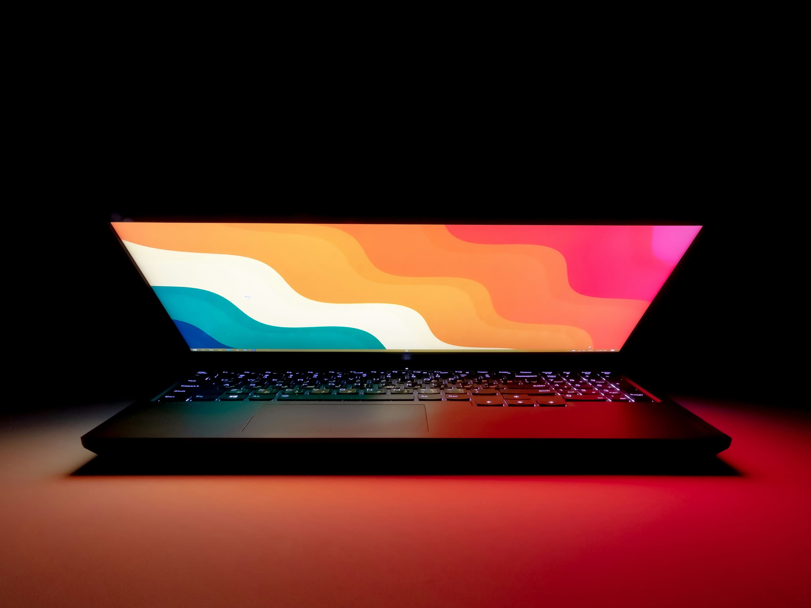
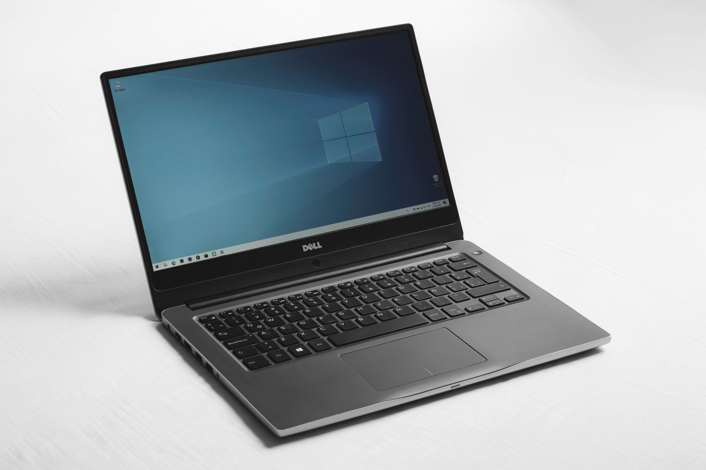
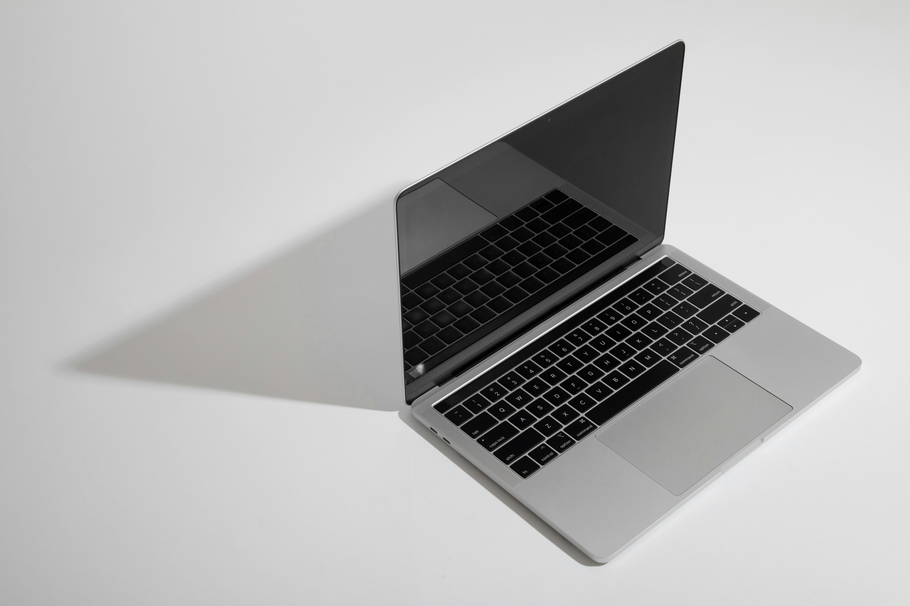

The future is for innovation with Hyperlaps
Where innovation meets limitless possibility
Where innovation meets limitless possibility

🔥 Hyperlap X1 (Ultra Performance Series)
Hyperlap Z5 (Gaming Beast Series)

Hyperlap S3 (Business & Productivity Series)/p>

. Hyperlap Flex 2 (2-in-1 Convertible Series
I’ve been using the Hyperlap X1 for a few weeks now, and honestly, it’s exceeded my expectations. The performance is incredibly smooth—even when I’m running heavy design software and multiple apps at once. The display is sharp, colors are vibrant, and the build feels really premium. What impressed me the most is how it balances power and portability. I can take it anywhere without feeling weighed down, and the battery easily lasts through my workday. If this is what Hyperlap is bringing to the table, I’m excited to see what’s next. — John Doe
Ready to Experience the Future?